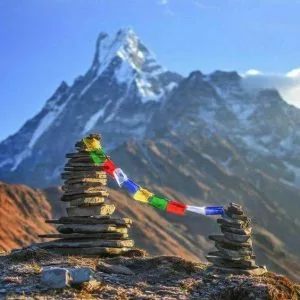
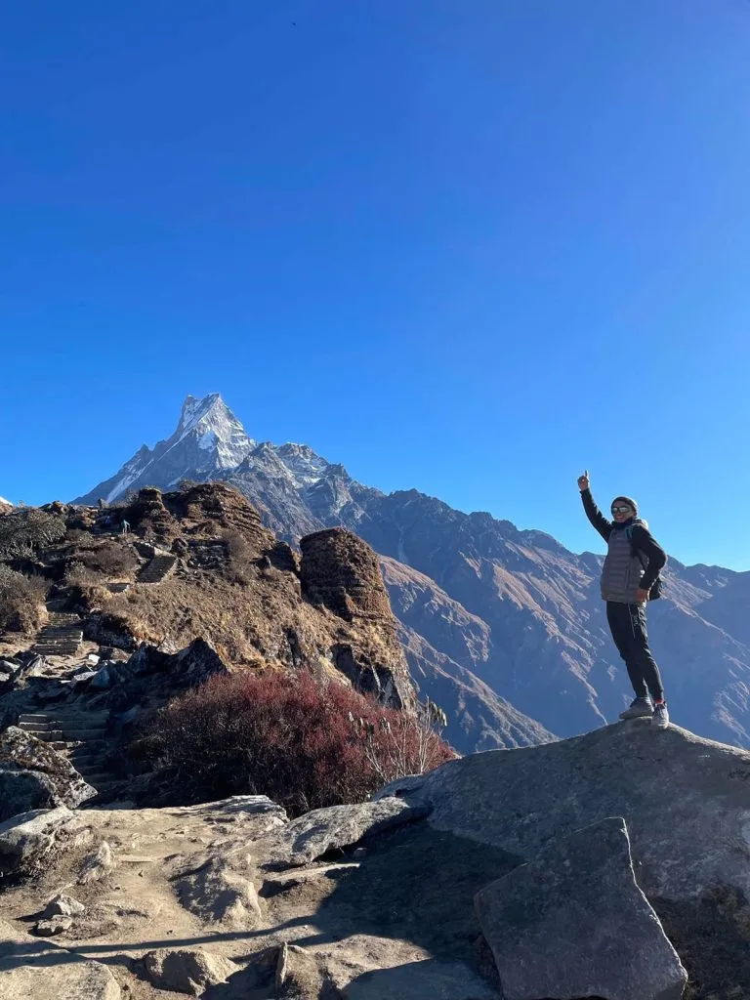
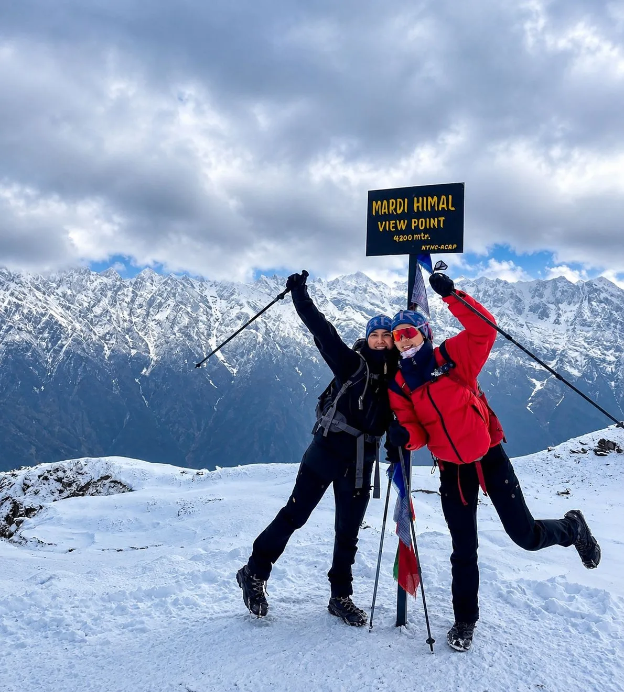
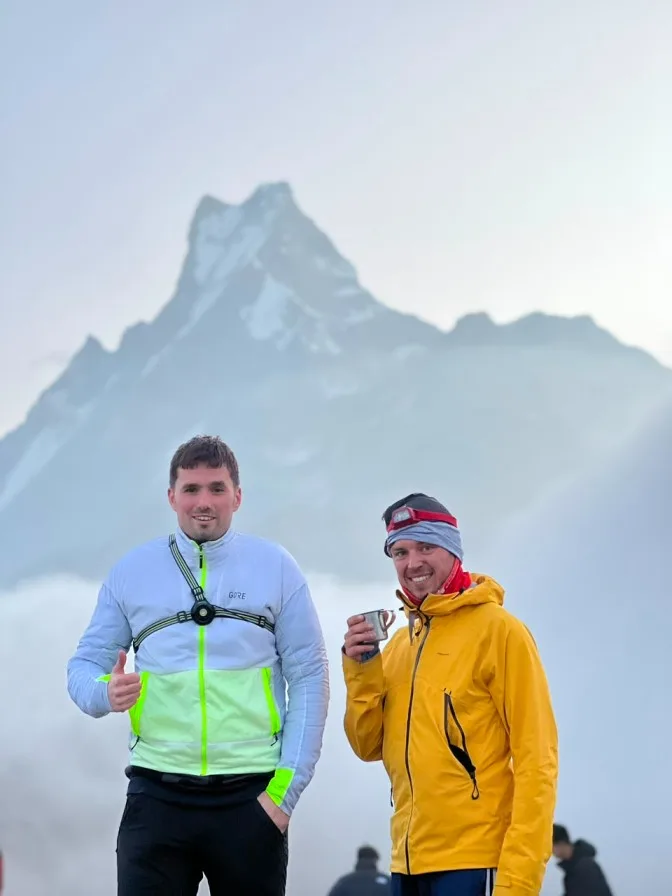
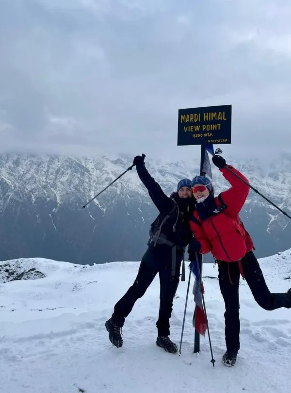
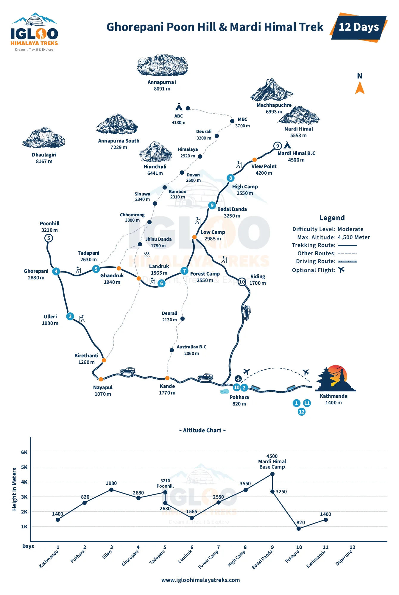

The Crown Jewel of Annapurna Ridge Treks: Why Mardi Himal Captivated Trekkers
For decades, trekkers seeking quick 4 to 6-day mountain escapes from Pokhara were limited to the low-altitude Ghorepani Poon Hill loop. While Poon Hill offers world-class panoramic sunrises over Dhaulagiri and Annapurna, it tops out at 3,210 meters and remains surrounded by tree cover. Trekkers hungry for genuine high-alpine terrain—surrounded by glacial moraines, jagged rock ribs, and thin air—had no option but to commit 10 to 12 days to Annapurna Base Camp.
The inauguration of the Mardi Himal Ridge Route changed everything. By tracking the narrow south-southwest ridgeline of Mardi Himal (the triangular peak nestled immediately beneath Machapuchare), this trek bridges the gap between short accessibility and true high-altitude mountaineering aesthetics. In just 48 hours of walking from the paved highway, you break above the tree line at Badal Danda (3,210m), leaving all forest canopy behind to walk on an open mountain crest floating above clouds.
The Unique Ridgeline Perspective: On river valley treks, your views are restricted by canyon walls until you reach the final basin. On Mardi Himal, you walk along the crest of a ridge every single day past Forest Camp. To your left lies the Modi Khola canyon with views of Annapurna South; to your right lies the Seti River valley stretching toward Pokhara.
The Iconic Narrow Knife-Edge Ridge: Eye-Level with Machapuchare
The geographic signature of the Mardi Himal trek is its spine-tingling proximity to Machapuchare (6,993m / 'Fishtail Peak'). Revered as the sacred home of the Hindu deity Lord Shiva, Machapuchare is strictly forbidden to mountaineering and remains one of the few iconic unclimbed summits on Earth.
From Pokhara, Machapuchare appears as a twin-horned fishtail. But as you hike along the Mardi Himal ridge, you view the peak in true profile: an impossibly steep, razor-sharp fluted pyramid of granite and ice. Between High Camp (3,580m), the Upper Viewpoint (4,200m), and Mardi Base Camp (4,500m), you are standing less than 4 kilometers from its sheer vertical south face. The sensation of being at eye-level with an 7,000-meter giant while standing on a narrow grassy trail is an experience unique in all of Nepal.

Trailhead Strategy: Kande, Phedi, Landruk & Forest Camp Connections
Reaching the Mardi Himal trailheads from Pokhara is remarkably swift and straightforward, with multiple entry and exit points:
- Kande Trailhead (The Preferred Ascent): Located 45 minutes west of Pokhara via paved highway. From Kande (1,770m), a gentle 1.5-hour climb up stone staircases brings you to Australian Camp (2,060m) and Pothana. This provides a gradual, scenic warm-up with sweeping views of the Annapurnas before plunging into the dense oak forest toward Forest Camp.
- Phedi Trailhead: Located 30 minutes from Pokhara. Involves an intense, steep 2-hour staircase climb straight to Dhampus (1,650m). Less popular than Kande due to the immediate quad burn on Day 1.
- Siding / Landruk (The Speedy Descent Route): On the return journey, most trekkers drop off the ridge from Low Camp down to Siding village (1,750m) or Landruk (1,565m). From Siding or Landruk, private 4WD jeeps drive you back to Lakeside Pokhara in 2.5 to 3 hours, allowing you to complete the entire trek in just 5 days.

The Definitive 5-Day & 7-Day Mardi Himal Itineraries
Depending on your vacation schedule, you can choose between a rapid 5-day express trek or a relaxed 7-day circular itinerary:
| Day | Standard 5-Day Express Route | Distance | Trek Time | Overnight Alt. | Key Strategic Focus |
|---|---|---|---|---|---|
| Day 01 | Drive Pokhara to Kande (45 mins); trek to Forest Camp (Kokar) | 11.5 km | 5 - 6 hrs | 2,550 m | Hike via Australian Camp and Pothana; enter silent moss forest. |
| Day 02 | Forest Camp to High Camp via Low Camp & Badal Danda | 8.5 km | 5.5 - 6.5 hrs | 3,580 m | Break above tree line at Badal Danda; stunning 360° ridgeline walk. |
| Day 03 | Pre-dawn hike to Base Camp (4,500m); descend to Low Camp | 13.5 km | 7.5 - 8.5 hrs | 2,970 m | 4:00 AM sunrise push to Upper Viewpoint & Base Camp; return to Low Camp. |
| Day 04 | Low Camp to Siding Village or Landruk | 7.0 km | 4 - 4.5 hrs | 1,750 m | Steep descent through mossy forest; authentic Gurung village homestay. |
| Day 05 | Trek to Lumre/Siwai, 4WD jeep drive to Pokhara | 5.0 km trek + drive | 2 hrs trek + 2.5 hrs drive | 820 m | Scenic riverside walk; return to Pokhara for lakeside celebrations. |
A 7-Day Itinerary splits Day 2 by sleeping at Badal Danda (3,210m) for superior acclimatization and descends via Landruk and Ghandruk, making it ideal for families, photographers, and casual hikers.

Elevation Profile & Acclimatization: Rapid Ascent from 1,770m to 4,500m
The primary tactical challenge on Mardi Himal is its rapid elevation gain. Because the trek is short, you climb from 1,770 meters at Kande to 3,580 meters at High Camp in just two days—a vertical gain of over 1,800 meters. On Day 3, you push another 920 vertical meters to reach 4,500 meters at Base Camp.
This rapid ascent rate means trekkers who rush are vulnerable to mild Acute Mountain Sickness (headache, nausea, poor sleep). To acclimatize successfully on a compressed schedule:
- The Badal Danda Hydration Break: When ascending from Low Camp (2,970m) to High Camp (3,580m), spend at least 45 minutes resting and drinking hot lemon tea at Badal Danda (3,210m) to allow your respiration rate to normalize.
- Climb High, Sleep Low on Day 2: Upon arriving at High Camp in the early afternoon, unpack your gear, rest for 30 minutes, and take a gentle 150-meter acclimatization hike up the ridge toward the first viewpoint before descending for dinner.
- Drink 4 Liters of Fluid Daily: Cold, dry ridge winds accelerate dehydration through exhalation. Enforce strict hydration discipline with hot ginger tea, garlic soup, and electrolyte water.
The High Camp to Mardi Himal Base Camp (4,500m) Pre-Dawn Push
Summit morning on Mardi Himal is one of the most thrilling pre-dawn alpine pushes in the Himalaya. Hikers wake up at 3:45 AM or 4:00 AM inside unheated High Camp teahouses, strap on headlamps, and step out onto the freezing, wind-whipped ridge in temperatures ranging from -5°C to -12°C.
The route ascends in three distinct stages:
- High Camp to Lower Viewpoint (1.5 hours / 3,900m): A steady, switchbacking ascent up grassy alpine tundra. As the eastern horizon begins to glow pale orange, Machapuchare appears like a golden monolith against the violet sky.
- Lower Viewpoint to Upper Viewpoint (1.5 hours / 4,200m): The ridge narrows significantly. You walk along a defined singletrack spine flanked by sheer drops into the Modi Khola on the left and the Seti River valley on the right. Trekkers are rewarded with full sunrise illumination over Annapurna South (7,219m), Hiunchuli (6,441m), and Gangapurna (7,455m).
- Upper Viewpoint to Mardi Base Camp (1.5 to 2 hours / 4,500m): The terrain transitions to barren moraine, shattered shale, and frozen snowfields. The final approach to the Mardi Himal Base Camp marker signpost (4,500m) places you directly beneath the vertical rock walls of Mardi Himal (5,587m) and the south ridge of Machapuchare.
Ridge Safety Alert: Between Upper Viewpoint and Base Camp, the trail traverses exposed narrow sections with steep lateral drop-offs. High mountain winds can gust up to 40–50 km/h in the morning. Use two trekking poles for balance, watch your footing on loose scree or black ice, and never attempt to walk along the ridge in thick fog without an experienced local guide.

Best Time to Trek: Autumn Foliage, Spring Rhododendrons & Winter Snow
Weather on a narrow ridge route is more exposed to winds and temperature shifts than an enclosed valley. Choosing the optimal season is critical for clear mountain views:
- Autumn (October & November): The gold standard. Post-monsoon atmospheric clarity is absolute. You will experience crisp, sunny days (12°C to 16°C), clear starry nights (-2°C to -8°C at High Camp), dry ridge trails, and panoramic mountain visibility extending 100+ kilometers.
- Spring (March & April): The floral wonderland. The lower forests between Pothana, Forest Camp, and Low Camp explode into a vibrant sea of crimson, scarlet, and pink rhododendron blossoms. Afternoon convective clouds can roll over the ridge by 2:00 PM, but early mornings are crystal clear.
- Winter (December - February): Serene and uncrowded. Daytime skies are piercing blue with zero atmospheric haze. However, snow covers the ridge from Low Camp to Base Camp, and temperatures at High Camp plunge to -15°C. Microspikes and cold-weather down sleeping bags are mandatory.
Teahouse Infrastructure: Forest Camp, Low Camp, High Camp & Badal Danda
Because Mardi Himal was developed recently, teahouse infrastructure has evolved rapidly from rudimentary huts to comfortable, modern alpine lodges:
| Camp Station | Altitude | Teahouse Quality | WiFi & 4G Signal | Shower & Water Heating |
|---|---|---|---|---|
| Forest Camp (Kokar) | 2,550m | Cozy stone lodges surrounded by trees | Ncell/NTC 4G (Moderate) | Gas geyser hot showers (NPR 350) |
| Low Camp | 2,970m | Clustered lodges in rhododendron forest | Spotty 4G / paid WiFi card | Gas geyser hot showers (NPR 400) |
| Badal Danda | 3,210m | Spectacular ridge-perched lodges | Good line-of-sight 4G | Bucket hot water / solar shower |
| High Camp | 3,580m | Rustic alpine huts beneath Fishtail | Weak 4G / weather-dependent WiFi | Bucket hot water (NPR 500); unheated rooms |
Teahouse dining rooms feature central wood or gas heaters in the evening. Menus offer hearty, freshly prepared meals: traditional Nepali Dal Bhat with free refills, fried noodles, potato rosti, hot porridge, momos, and garlic soup.

Mardi Himal Packing Checklist: Microspikes, Windproof Shells & Layers
Because you are walking along an exposed ridge, wind-chill and temperature swings are amplified. Your packing system must emphasize wind protection and thermal insulation while keeping daypack weight under 7kg:
- Traction Microspikes: Non-negotiable from November through April. Hard-packed snow and shaded ice on the knife-edge ridge between High Camp and Base Camp can be lethal without trail microspikes.
- Down Sleeping Bag (-10°C to -15°C): High Camp bedrooms are uninsulated plywood boxes where nighttime temperatures drop below freezing. A quality down sleeping bag guarantees restful recovery.
- Windproof Hard Shell Jacket: A 3-layer Gore-Tex or technical windproof jacket with an adjustable storm hood to deflect biting 40 km/h morning ridge winds.
- Two Adjustable Trekking Poles: Essential for stability along narrow singletrack ridges and cushioning knees on the steep descent to Siding.
- Polarized Glacier Sunglasses (Cat 3 or 4): The intense alpine sun reflection off snowfields between Upper Viewpoint and Base Camp requires 100% UV protection.
Physical Difficulty Demands: Steep Forest Climbs vs ABC Stone Stairs
Trekkers frequently ask: How hard is Mardi Himal compared to Annapurna Base Camp?
The nature of the physical strain is completely different. ABC is famous for its 6,000+ hand-cut stone steps, causing severe knee-jarring impact and calf fatigue. Mardi Himal, by contrast, features far fewer stone staircases. Instead, you walk on natural forest soil, tree roots, and grassy alpine dirt tracks.
However, Mardi Himal involves continuous, steep elevation gains. While ABC rolls up and down across river canyons, Mardi Himal climbs relentlessly upward along the ridge crest. The final descent from High Camp (3,580m) to Siding (1,750m) drops over 1,800 vertical meters in a single day through steep, slippery tree roots, which severely tests quadriceps and balance.

Permits & Regulations: ACAP, TIMS & Mandatory Guide Mandate
Mardi Himal falls entirely within the protected boundaries of the Annapurna Conservation Area. Foreign trekkers require two official permits, verified at checkposts in Pothana and Australian Camp:
- Annapurna Conservation Area Project (ACAP) Permit: NPR 3,000 (~USD $23) per person for foreign nationals; NPR 1,000 for SAARC citizens.
- TIMS Card (Trekkers' Information Management System): NPR 2,000 (~USD $15) per person.
- Mandatory Certified Guide Rule: Under Nepal Tourism Board regulations, foreign trekkers are legally required to hike with a certified guide registered through a licensed agency. On Mardi Himal's exposed, narrow ridgelines—where sudden cloud cover can disorient hikers—having an experienced guide is an indispensable safety asset.
Comprehensive Budget Breakdown: 5-Day Guided Package & Daily Incidentals
Because of its short duration and proximity to Pokhara, the Mardi Himal Trek is one of the most budget-friendly alpine adventures in the Himalaya. Below is an itemized cost projection for a 5-day trek:
| Expense Category | Estimated Cost (NPR) | Estimated Cost (USD) | Budget Notes |
|---|---|---|---|
| Permits (ACAP + TIMS) | NPR 5,000 | ~$38 | Fixed official government fees per trekker. |
| Private Transport (Pokhara-Kande, Siding-Pokhara) | NPR 10,000 - 13,000 total | ~$75 - $100 total | Split between passengers; private taxi + 4WD return jeep. |
| Teahouse Lodging (4 nights) | NPR 500 - 800 / night | ~$4 - $7 / night | Clean private twin room in ridge teahouses. |
| Daily Meals & Hot Drinks (5 days) | NPR 3,000 - 4,000 / day | ~$23 - $30 / day | Hearty breakfast, trail lunch, warm dinner, and hot teas. |
| Hot Showers & Charging Incidentals | NPR 400 - 700 / day | ~$3 - $5 / day | Pay-per-use gas geyser showers and solar battery charging. |
| Licensed Trekking Guide | NPR 3,500 - 4,500 / day | ~$26 - $34 / day | Includes guide's wage, food, lodging, and professional insurance. |
| Porter (Optional, carries 18-20kg) | NPR 2,800 - 3,500 / day | ~$21 - $26 / day | Highly recommended for carrying heavy sleeping bags and duffels. |
Mardi Himal vs. Annapurna Base Camp: Which Ridge/Sanctuary Suits You?
Choosing between Mardi Himal and Annapurna Base Camp comes down to terrain preference, time availability, and visual aesthetics:
| Expedition Factor | Mardi Himal Trek | Annapurna Base Camp (ABC) | Strategic Recommendation |
|---|---|---|---|
| Trek Duration | 4 to 6 days | 7 to 10 days | Mardi Himal is ideal for tight 1-week vacations. |
| Topographic Perspective | Elevated knife-edge ridge spine | Enclosed glacial sanctuary basin | Mardi walks along mountain crests; ABC enters a natural amphitheater. |
| Trail Surface | Natural dirt, tree roots, alpine tundra | Over 6,000 hand-carved stone steps | Mardi is gentler on knees; ABC tests quad stamina on stairs. |
| Trail Crowds | Moderate / tranquil | High / bustling | Mardi offers greater trail quiet and personal space. |
| Maximum Elevation | 4,500 meters (Base Camp) | 4,130 meters (ABC) | Mardi reaches 370m higher, but spending less time above 3,500m. |
| Main Mountain View | Machapuchare & Annapurna South in profile | Annapurna I (8,091m) & Machapuchare front face | ABC showcases the 8,000m south face; Mardi offers close Fishtail views. |

The 10 Commandments of an Unbeatable Mardi Himal Expedition
To ensure your Mardi Himal trek is a flawless, unforgettable alpine adventure, follow these ten battle-tested rules:
- Depart High Camp by 4:00 AM on Summit Day: Beat afternoon cloud buildup, enjoy the blazing alpenglow sunrise on Machapuchare, and avoid high afternoon ridge winds.
- Always Carry Trail Microspikes: Essential for traction on icy snow traverses between High Camp and Base Camp from November through April.
- Hydrate Aggressively: Drink 4 liters of warm fluids daily to counter the dehydrating effects of exposed ridge winds and rapid elevation gains.
- Pack a -10°C Comfort-Rated Sleeping Bag: High Camp teahouses are unheated; proper sleep insulation is vital for physical recovery.
- Use Two Trekking Poles: Critical for balance along narrow ridgeline trails and saving knees on the steep 1,800m descent to Siding.
- Hire a Porter for Heavy Duffels: Hiking with only a 5kg daypack makes steep ridge climbs enjoyable and safe.
- Eat Fresh Dal Bhat Twice Daily: Fuel your body with clean, easily digested carbohydrates, lentils, and unlimited free refills.
- Bring Cash in Small Bills: Withdraw at least NPR 25,000 in Pokhara; there are zero ATMs once you leave the highway.
- Keep Batteries Inside Your Sleeping Bag: Sub-zero night temperatures at High Camp drain smartphone and camera batteries rapidly.
- Trek With a Certified Local Agency: Partner with Igloo Himalaya Treks for certified guides, private 4WD logistics, guaranteed teahouse rooms, and emergency safety oversight.
Ready to Experience the Himalayas?
Whether you are preparing for high-altitude trekking, cultural circuits, or alpine summit expeditions, start planning a bespoke journey tailored to your fitness, travel season, and style.